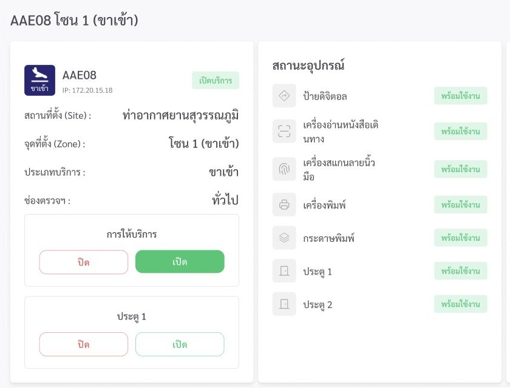
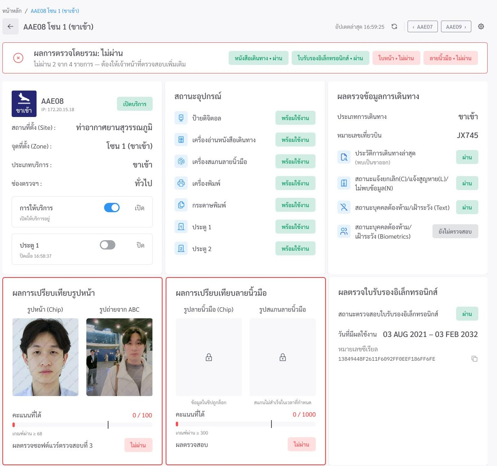
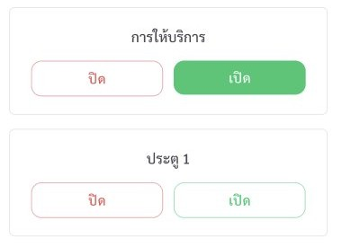
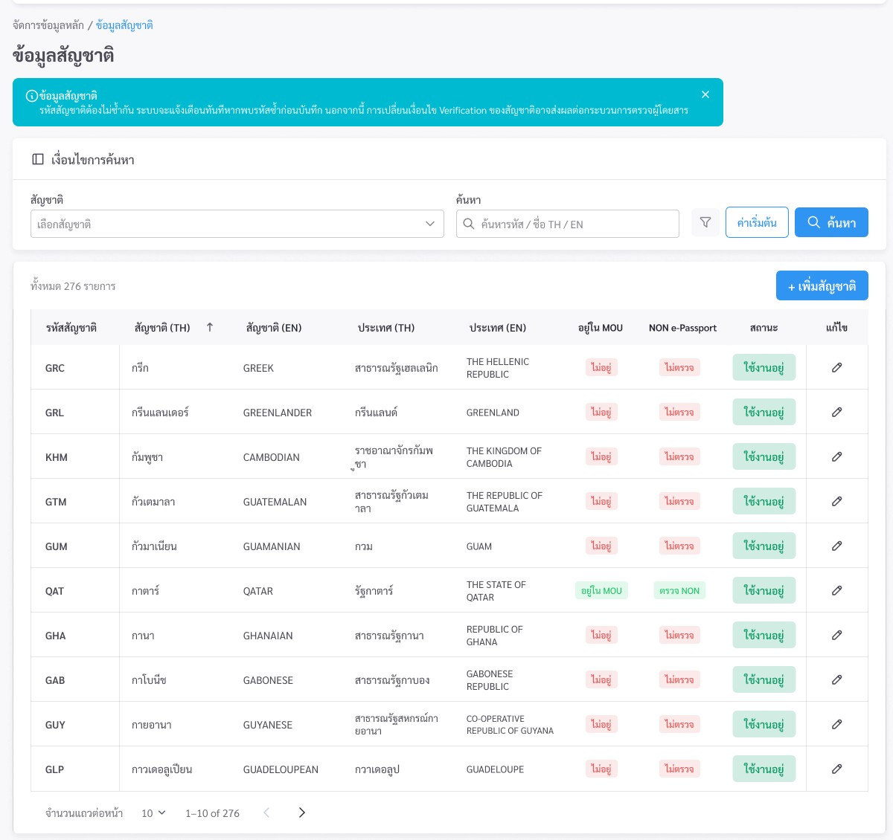
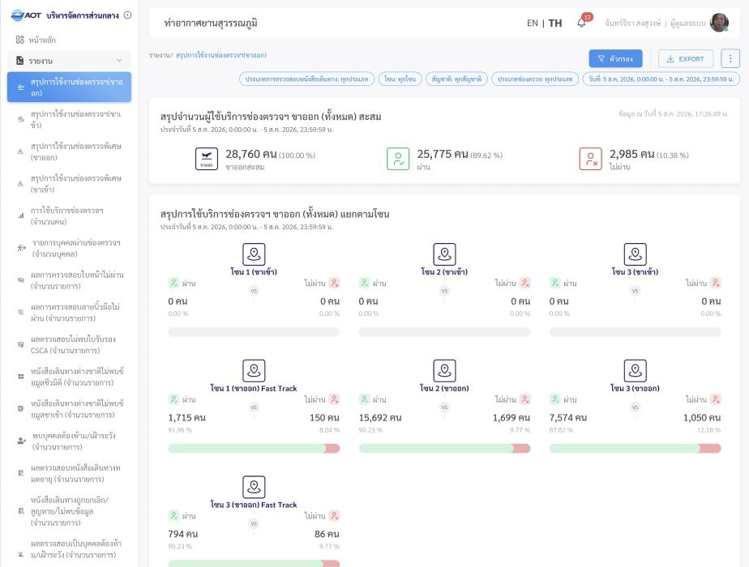
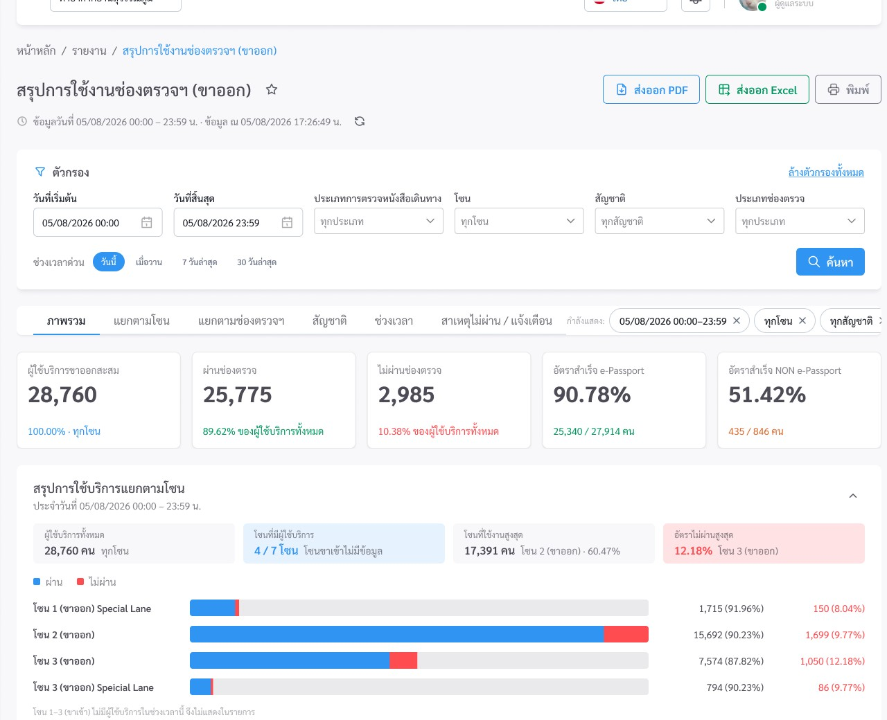

10modules reviewed
10heuristics as the checklist
6user groups mapped
9root problems found
Redesign of the back-office tool airport and immigration staff use to monitor and control automated passport gates.

Airports of Thailand runs its automated passport gates from one back-office tool. Years of additions left it organised by module: ten top-level menus, 24 separate report pages, and a red outline on almost every gate card.
Expert review of every module, then the old sitemap and nine root problems, then roles, user goals, stories and flows. Only then a new sitemap and the screens.
Six design decisions, each traced to a finding, carried into hi-fi on a new design system. Next step: task-based tests with each role group.
I reviewed every module of the existing tool, from login to master data, against Nielsen’s ten heuristics. Each finding was logged with the heuristic it broke or met and a recommendation. The dashboard module, as an example:
| # | Finding | Heuristic | Recommendation |
|---|---|---|---|
| 01 | Status uses many colours and styles, so staff have to remember what each one means. | Broken6 · Recognition rather than recall | Colour, icon and label together, with a legend for rare states. |
| 02 | The connection modal mixes main options and sub-options. It is unclear which checkboxes belong to which radio button. | Broken6 · Recognition rather than recall | Group it: connection type, then systems, then extra checks, with indentation and helper text. |
| 03 | Red borders on most gate cards. A critical fault looks the same as a normal state. | Broken8 · Aesthetic and minimalist design | Red only where a person is needed. Tone down everything else. |
| 04 | High information density. Staff scan every card to find the one that matters. | Broken8 · Aesthetic and minimalist design | Per card: gate name, main status, critical issue, one primary action. |
| 05 | The detail page is split into gate, devices, passenger result, timeline and biometrics. | Met6 · Recognition rather than recall | Keep the sections. Make the headings stronger than the data. |
| 06 | Dashboard → settings → detail lets staff drill down from the overview. | Met7 · Flexibility and efficiency | Keep the flow. Add a clear way back to the dashboard. |
Findings that met a heuristic were kept on purpose. Not everything in the old tool was broken.
I traced every finding back to its cause. Most screen-level issues came from the same nine, so those nine became the brief.
| Root problem | What it costs staff |
|---|---|
| Menus follow modules, not tasks | Hard to find a function. Long time to learn the system. |
| No clear workflow | Staff must already know which menu, which button, and where to go next. |
| Lots of data, no priority | Reading whole tables to find the one thing that matters. |
| Too many filters and search fields | Searching and checking take longer than the task itself. |
| Inconsistent UI | The same interaction is relearned in every module. |
| View and edit look the same | Unsure whether a detail page is read-only or a form. |
| Permissions ticked one by one | Long lists that are hard to review before saving. |
| Technical menu names | New staff learn the vocabulary before they can learn the job. |
| Features keep piling up | Every request added another menu, pattern, modal, filter or master-data list. |
Not everyone who opens the tool should be able to change a gate. I grouped the six user groups by what they do with it, then wrote each group’s goal and stories before drawing a screen.
Central immigration (AOT + CWN)
User goalSee every airport in one place and pass problems to the right team in time.
User stories · “I want to…”Read-only views, alerts and hand-off. No gate controls.
System admins, supervisors, operation staff, unit heads
User goalWatch their airport or side, open the incident, act, and confirm the result.
User stories · “I want to…”Controls sit next to the state they change. Risky actions ask for a reason and are logged.
Immigration master-data unit
User goalKeep nationality, visa and behaviour rules current, so the automated checks follow the latest policy.
User stories · “I want to…”One master-data template with validation, duplicate-code errors and a guard on deleting data in use.
One flow per group, from login to the moment the job is done. The branch at the end of each flow became the screen that needed the most care.
The passenger never uses the tool, but every check in their flow is what staff read on the gate detail page.
Staff already knew where things lived, so the top-level groups stayed. The change was underneath: every screen got a spec of its content and states, missing pages were added, and repeated pages collapsed into five templates.
Before any hi-fi, every decision had to point at a finding or a root problem, name the role it serves, and say how we would know it worked.
| Decision | Because | For | Expected outcome |
|---|---|---|---|
| D1 · Exceptions first. The dashboard opens on counts and a “needs attention” tab, with one issue per gate. | Findings 03, 04. Lots of data, no priority. | MonitorMonitor + Action | Staff reach the right gate from an alert without scanning every card. |
| D2 · Verdict before detail. Gate detail leads with the passenger result and the failed checks. | Operation staff story: decide to allow or refuse. | Monitor + Action | A faster, more confident allow/refuse decision. |
| D3 · Risky actions need a reason. Opening a gate asks which door and why, and logs who did it. | Open/close was one click. Unit heads must audit decisions. | Monitor + Action | Fewer wrong-gate opens. Every override has a reason in the log. |
| D4 · One place to find a report. A new report hub with groups, search and pins replaces 24 sidebar links. | Menus follow modules. Technical names. | All roles | Any report is found from one place, by name or group. |
| D5 · Search, then refine. One search field and quick filters; the rest moves into a drawer. | Too many filters. Filters reset every visit. | MonitorAction | A useful first result without filling in a wall of fields. |
| D6 · Templates, not pages. Five templates cover 50 report, inquiry, log and master-data pages. | Features keep piling up. Inconsistent UI. | Product team | New requests ship without a new pattern. |
Cropped to the part that changed, at full size. Before on the left, after on the right.
Counts become filters. Staff start on “Abnormal 5”, and each card carries one issue and its time.


“Failed 2 of 4” sits above everything. Face and fingerprint results sit next to each other with their pass line.


Opening a gate lets a passenger through without a full check, so it now stops for a moment.


One search card replaces the wall of fields. Results and status come first.


The same departure report on Template A: filters open, KPIs first, then by zone and gate.


Most of the old inconsistency came from colour meaning different things in different modules. The design system ties each status colour to one meaning, and every template is built from the same components.
ผลการตรวจโดยรวม: ไม่ผ่าน
Sarabun · Thai and English UI
AAE08 · 172.20.15.18 · 16:58:37
IBM Plex Mono · IDs, IPs, counts, times
Form, button, badge, tag, chip, tabs, modal and confirm dialog, toast, upload, tooltip, breadcrumb, pagination, stepper, avatar, and a data table with filter, empty and loading states.
Not launched yet, so there are no results to report. These are the goals the decisions were designed against, and the outcome each should produce.
Expected: staff go from a red count to the failing gate and the reason in one or two clicks, without scanning every card.
Expected: no gate opened without a recorded reason, and unit heads can review every override in the log.
Expected: a named report found from one hub, and a first result without filling in a wall of fields.
Expected: new reports and master-data lists reuse one of five templates instead of adding a new pattern.